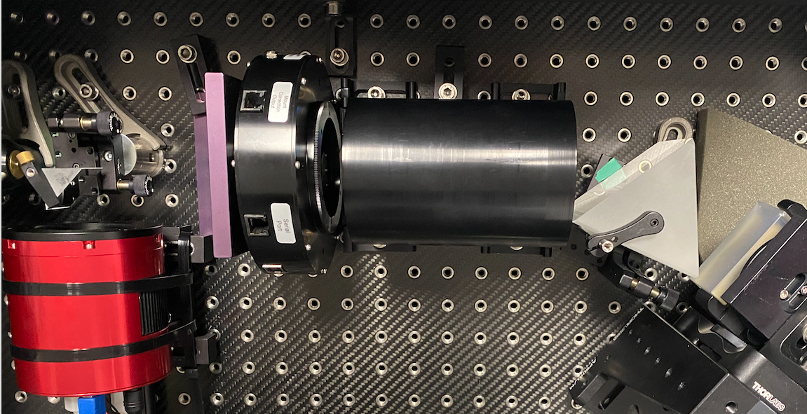
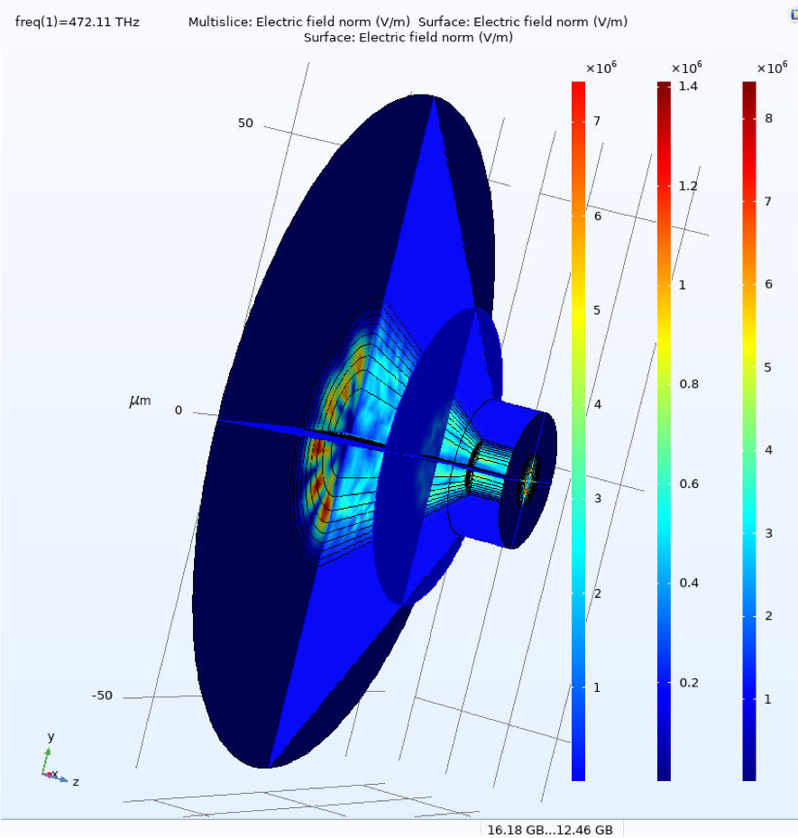
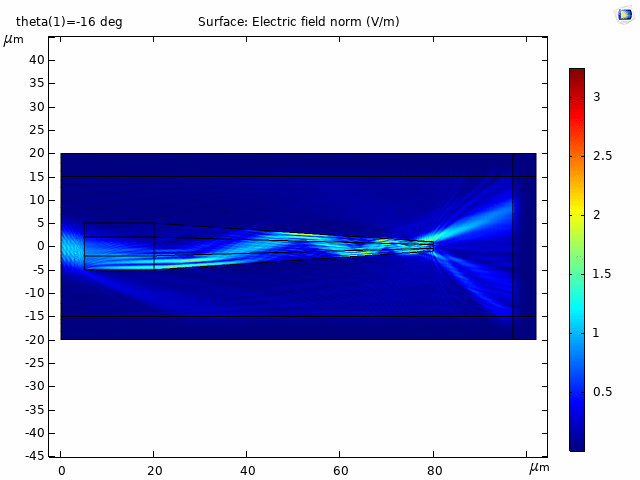
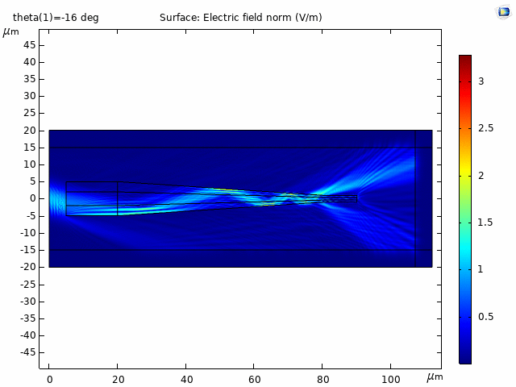
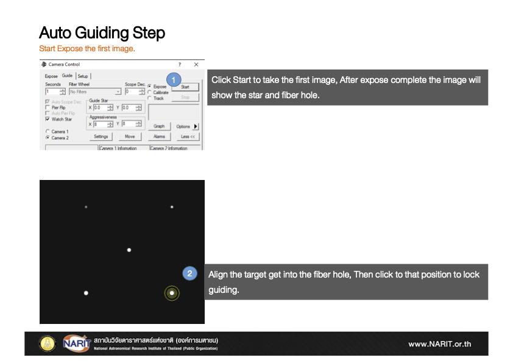
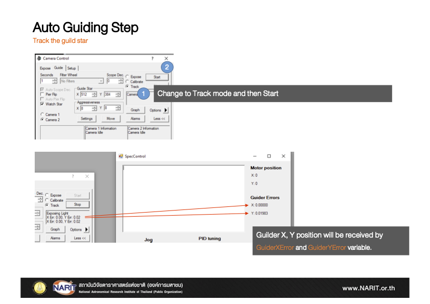
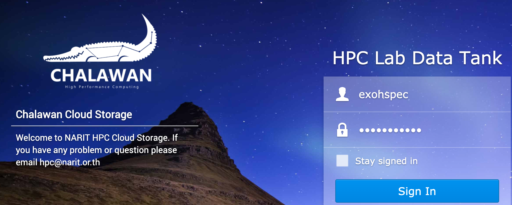
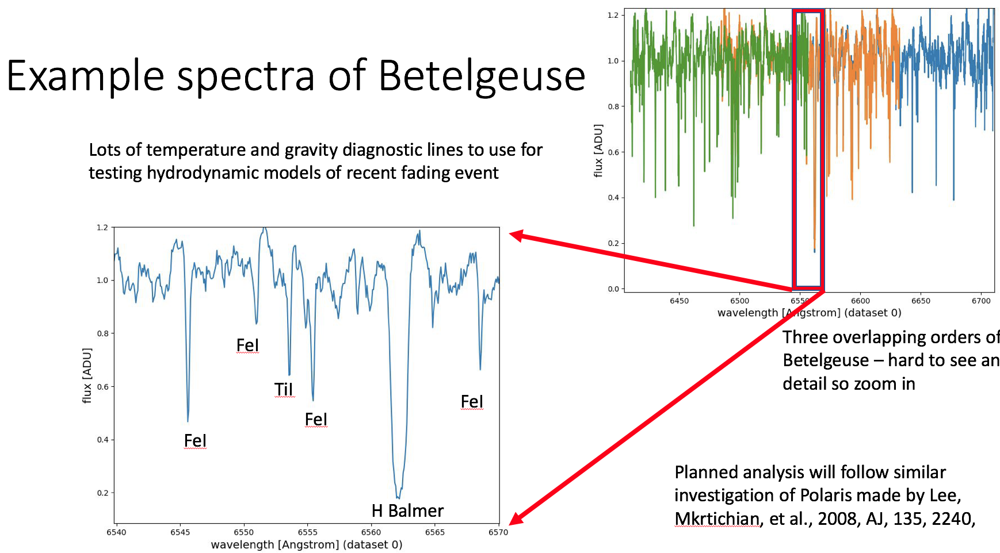

Radial velocity
τ Boötis
EXOhSPEC measurements compared with a reference curve generated using DACE.
UK–Thailand astronomical instrumentation programme
The EXOplanet high-resolution SPECtrograph explores innovations in optics, fibre coupling and active control to make high-resolution stellar spectroscopy smaller, more accessible and more stable.

Developed through international collaboration


A practical route to precision
EXOhSPEC is an actively controlled, fibre-fed, double-pass optical spectrograph. Its compact architecture uses principally off-the-shelf components while targeting the stability required for exoplanet and stellar radial-velocity studies.
Folded double-pass architecture
Zemax optimisation, SolidWorks mechanical development and a NARIT-designed achromatic triplet bring the compact instrument together.
Coupling, tapering & modal noise
Simulation and laboratory rigs compare fibre geometries, numerical-aperture matching, tapered fibres and methods for mitigating modal noise.



Stability by measurement
The established feedback system measures arc-line position and commands piezo adjustment. The original programme site reports metrology performance reaching 0.017 pixel.

Thai National Observatory
At AstroPark, the spectrograph is housed on the ground floor with telescope control above. The programme connects the University of Hertfordshire laboratory with NARIT’s 2.4 m Thai National Telescope.
Star to fibre
The acquisition and guiding unit images both the target star and the fibre face. Telescope focus and pointing bring the stellar image onto the darker fibre core while the internal camera supports closed-loop guiding.


Acquire the target, focus the stellar image, place it on the fibre core and maintain maximum light at the spectrograph.
Measurements from sky to detector
EXOhSPEC measurements compared with a reference curve generated using DACE.
Magnetically sensitive lines show increasing broadening with higher effective Landé factor.
An early end-to-end spectrum of the Moon recorded through thick cloud.
An evolving instrument programme
Optical agitation with a galvanometer was evaluated on the EXOhSPEC prototype.
Tapered graded-index fibres and a low-cost solid fused-silica metalon extend the instrument’s fibre-feed and wavelength-calibration research.
Biswajit Jana’s work, supervised by Prof Hugh R. A. Jones and Prof Bill Martin, studies thermal and optical-path disturbances and hybrid feedback on the UH prototype.
Project repositoryPeer-reviewed research & proceedings
The original publication record is retained and updated with later work using the EXOhSPEC platform.
S. Ghosh, W. Martin, K. Kunverji & H. R. A. Jones
P. Choochalerm, B. Martin, H. Jones & S. Usher
S. Ghosh et al.
P. Choochalerm et al.
H. R. A. Jones et al.
P. Choochalerm et al.
R. Errmann et al.
E. Lhospice et al.
A. Baker et al.
S. Kawinkij et al.
Technical documents & infrastructure
EXOhSPEC design outlineAcquisition and guidance unitHiFLEx source repository

